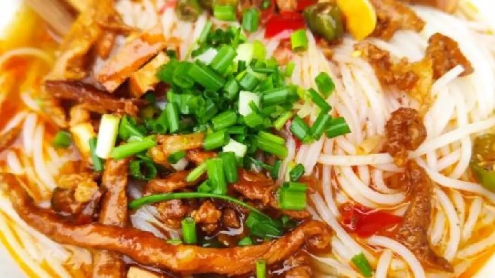
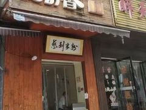
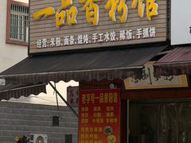
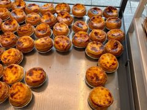
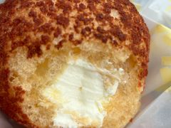
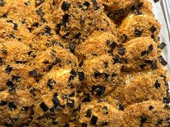
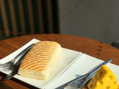
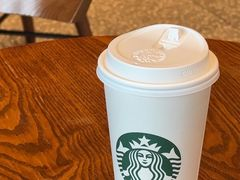
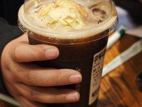

🍜 장가계 시내 · 아침식사
[장가계 천문산 아침] 이핀샹 펀관 관리루점｜6시부터 먹는 현지 쌀국수 한 그릇
천문산으로 일찍 출발하는 날, 호텔 조식 시간이 맞지 않거나 따뜻한 국물로 간단히 시작하고 싶은 분을 위한 선택지입니다. 관광객용 코스요리보다 현지식 아침 한 끼에 가깝습니다.

해당 지점 공개 사진 1
해당 지점 공개 사진 2
해당 지점 공개 사진 3중국어 상호·주소一品香粉馆（官黎路店）
官黎路汽车站天门小学旁
예산·추천 메뉴플랫폼 참고 1인 13~25위안
牛肉粉 / 三鲜米粉 / 肥肠米粉
이용 핵심06:00–18:00 표기
조기 품절·마감은 당일 재확인
누구에게 맞나요?
천문산 이른 일정, 혼자 먹는 아침, 관광지 입장 전에 빠르게 먹을 따뜻한 식사가 필요한 분에게 맞습니다. 곱창 향이 부담스럽다면 소고기나 삼선 쌀국수부터 고르세요.
주문할 때 이렇게 보여 주세요
我要一碗牛肉粉，不要香菜，少辣。
소고기 쌀국수 한 그릇 주세요. 고수는 빼고, 덜 맵게 해 주세요.
这个是米粉还是面条？鸡蛋另外收费吗？
이것은 쌀국수인가요, 밀면인가요? 달걀 추가는 별도 비용인가요?
결제·주의
해외카드나 한국 번호로 만든 중국 결제 앱의 성공 여부는 확인되지 않았습니다. 주문 전에 결제 수단을 보여 주고 위안화 현금도 준비하세요. 가격·재료·영업시간은 바뀔 수 있습니다.
웹사이트에서 중국어 상호 복사와 지도 검색:
로투차 맛집 지도Cafe 게시 후 웹사이트의 게시판 링크를 실제 글 주소로 교체합니다.
🥐 장가계 시내 · 베이커리
[장가계 이동 간식·생일 준비] 지신리야 베이커리 부부가오점｜빵·에그타르트·케이크를 한곳에서
차량 이동 전에 먹을 간식, 아이가 먹기 쉬운 빵, 여행 중 생일 케이크가 필요할 때 확인할 만한 현지 베이커리입니다. 당일 진열과 재고를 보고 고르는 방식이 가장 안전합니다.

에그타르트 · 蛋挞
크림 퍼프 · 爆浆脆皮泡芙
로우송 샤오베이 · 肉松小贝중국어 상호·주소吉新利亚咖啡烘焙店（步步高店）
回龙路维港十字街六幢101号
예산·추천플랫폼 참고 1인 19~40위안
에그타르트·퍼프·샌드위치·케이크
확인할 것당일 생산 시간·보관법
케이크 문구·수령 시간·최종 가격
실용적인 주문 방법
빵은 이름보다 진열 사진을 보고 수량을 손가락으로 확인하는 편이 쉽습니다. 케이크는 크기(寸), 문구, 초 포함 여부, 냉장 보관 시간과 픽업 시간을 결제 전에 적어 두세요.
这个面包是今天做的吗？可以常温放多久？
이 빵은 오늘 만든 건가요? 실온에서 얼마나 보관할 수 있나요?
我要六寸蛋糕，今天几点可以取？写字另外收费吗？
6인치 케이크가 필요합니다. 오늘 몇 시에 받을 수 있나요? 문구는 추가 비용인가요?
결제·주의
최신 영업시간은 출처에서 충분히 확인되지 않았습니다. 방문 당일 지도 또는 매장 전화 0744-8861778로 확인하세요. 알레르기가 있으면 우유·달걀·견과류·땅콩 포함 여부를 반드시 물어보세요.
웹사이트 상세 카드:
로투차 맛집 지도현재 Cafe 링크는 메뉴 3으로 연결되며 게시 후 실제 글 주소로 교체합니다.
☕ 장가계 시내 · 커피와 휴식
[장가계 시내 약속 대기] 스타벅스 보푸문화광장점｜익숙한 커피와 좌석이 필요할 때
현지 카페 탐방보다 ‘찾기 쉬운 약속 장소, 잠깐 앉을 공간, 익숙한 커피 주문’이 중요한 여행자에게 실용적인 선택지입니다. 중국 한정 메뉴와 결제 방식은 한국과 다를 수 있습니다.

해당 지점 공개 매장·메뉴 사진
플랫화이트 · 馥芮白
해당 지점 공개 음료 사진중국어 상호·주소星巴克（张家界泊富文化广场店）
解放路188号泊富国际文化广场一层
예산·용도플랫폼 참고 1인 31~40위안
약속 대기·잠깐 휴식·익숙한 메뉴
한국과 다른 점시즌 메뉴·사이즈·앱·쿠폰이 다를 수 있음
쇼핑몰과 매장 영업시간도 별도 확인
주문할 때 필요한 문장
我要一杯热拿铁，中杯，不另外加糖。
따뜻한 라테 톨 사이즈 한 잔 주세요. 설탕은 추가하지 말아 주세요.
可以用这张卡付款吗？如果不可以，我用现金。
이 카드로 결제할 수 있나요? 안 되면 현금으로 낼게요.
이용 팁
한국 스타벅스 앱·쿠폰·별 적립이 중국 매장에 그대로 적용된다고 가정하지 마세요. 해외카드도 매장 단말과 카드사에 따라 달라질 수 있으니 결제 전에 확인하고 위안화 현금을 예비로 준비하세요.
웹사이트 상세 카드:
로투차 맛집 지도Naver Cafe 메뉴 3과 상호 연결하며, 실제 게시 전에는 글 URL을 만들지 않습니다.
이미지 출처: 각 글에 연결된 다중뎬핑 해당 지점 공개 사진 페이지. 플랫폼에 보인다는 사실을 저작권 허가로 표현하지 않았으며 워터마크 제거도 수행하지 않았습니다. 공개 게시 전 운영자 최종 확인이 필요합니다.